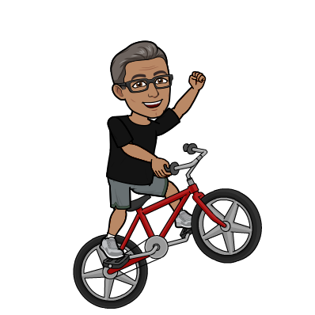

Stephen Montoya - All about me
Hobbies
I love to golf, and my handicap can change from year to year, but generally I fluctuate from a 10 - 15 handicap.

My other favorite thing to do is Cycle. It is a great stress reliever for me, plus I get in some great aerobic exercise.
